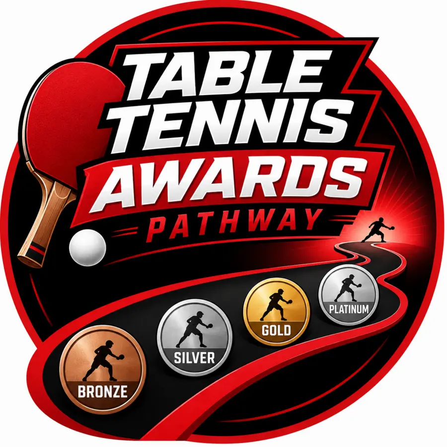

Milestone Awards
Master the moments that change a game.
Four focused awards recognise backspin, sidespin, smash speed and topspin.
BACKSIDESPEEDTOP

A clear route from first spin to platinum
TT Awards Pathway helps table tennis clubs recognise progress, build confidence and keep players motivated through a structured series of skill-based awards.

Built for real club sessions
From developing spin and speed to demonstrating an all-round game, each award gives coaches a clear assessment framework and players a meaningful moment of achievement.
Two connected journeys
Milestone Awards
Four focused awards recognise backspin, sidespin, smash speed and topspin.
Pathway Awards
Four progressive levels reward broader development, consistency and match-ready ability.
Simple to run
Everything is designed to fit naturally into coaching and club sessions.
Purchase the scheme and assessment sheets for the level you want to offer.
Use the clear criteria to help players practise, progress and demonstrate their ability.
Successful players receive a quality badge and certificate to mark their achievement.
Ready to begin?